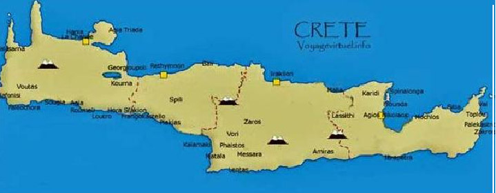
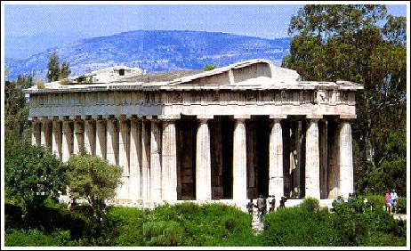
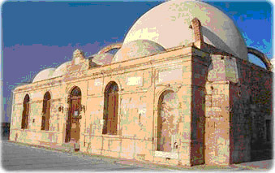
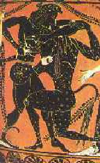
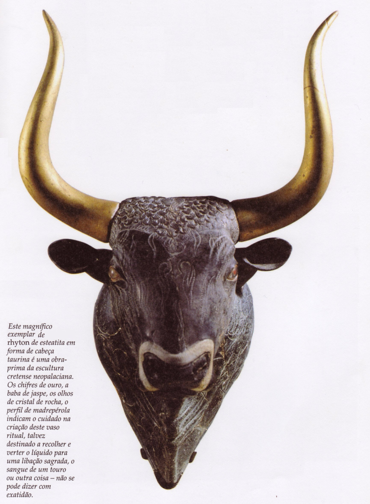
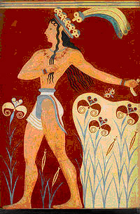
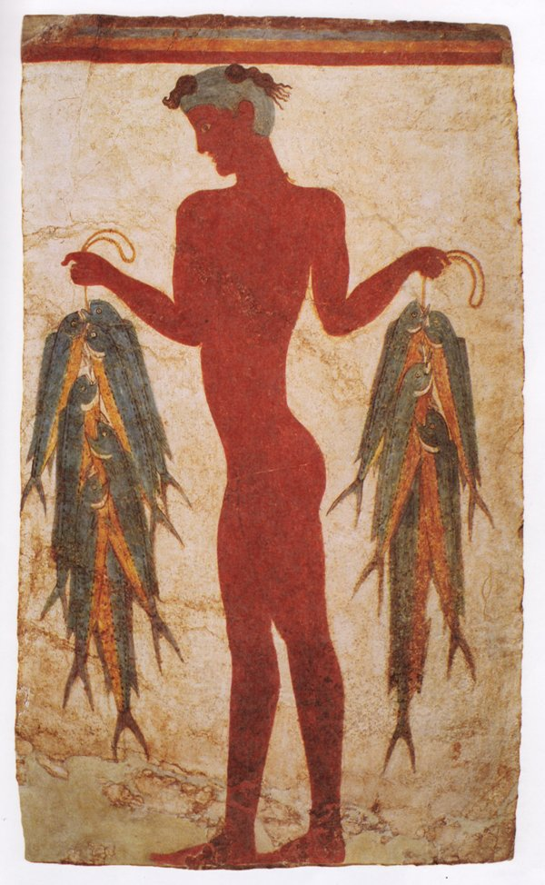
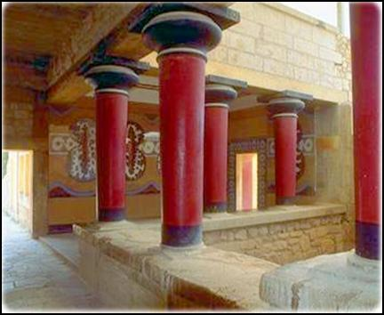
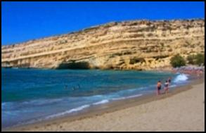

Creta
por Regina Oliveira Rodrigues
Introdu��o
 A Ilha de Creta localiza-se no
sul da Gr�cia, os cretenses desenvolveram uma cultura sustentada
pelo com�rcio mar�timo. A quest�o mar�tima foi t�o presente entre os
cretenses que chegaram a dominar regi�es do Mediterr�neo.
Entre
3000 e 2000 a.C., os primeiros habitantes da ilha chegaram formando
um conjunto de pequenas cidades. J� nessa �poca, dominavam t�cnicas
de manuseio de metais e comercializavam com os eg�pcios e as
popula��es das Ilhas C�clades. A partir do desenvolvimento
comercial, os primeiros grandes centros urbanos apareceram em Creta.
No ano de 1750 a.C. um grande terremoto ou um processo de invas�o
territorial interrompeu o desenvolvimento da civiliza��o
cretense.
Durante o governo do Rei Cnossos,
por volta de 1700 a.C., iniciou-se a reorganiza��o dos cretenses.
V�rias cidades foram subjugadas � domina��o de Cnossos. V�rios
pontos comerciais foram criados ao longo do mar Egeu, possibilitando
o soerguimento da economia mar�tima cretense. Por volta de 1400 a.C.
a invas�o dos aqueus abriu um novo per�odo considerado como
primordial para o aparecimento da civiliza��o grega.
Al�m de organizarem em torno do desenvolvimento
comercial, a civiliza��o cretense tamb�m contava com outras
interessantes caracter�sticas. Alguns documentos trazem a id�ia de
que a sociedade cretense foi marcada pelo prest�gio delegado �
figura feminina. Um dos mais fortes ind�cios que sustentam essa tese
vem do campo religioso. O culto � Grande M�e, deusa das terras e da
fertilidade, era uma das muitas manifesta��es religiosas de Creta.
Ap�s a invas�o dos aqueus e dos d�rios, a
civiliza��o cretense desapareceu para, anos mais tarde, dar lugar ao
antigo Mundo Grego. Ao contemplarmos alguns tra�os da cultura
hel�nica percebemos em que medida os gregos foram influenciados por
essa antiga civiliza��o.
Origens
Creta
� uma das
maiores ilhas do Mediterr�neo. Consiste principalmente em colinas e
montanhas, com alguns vales f�rteis. Uma estreita plan�cie
estende-se na costa norte, onde se encontram as maiores cidades e
alguma ind�stria leve. Na costa sul, as montanhas descem
abruptamente para o mar.
A civiliza��o Cretense
passou por tr�s est�gios:
- Civiliza��o
eg�ia;
-
Civiliza��o cretense;
-
Civiliza��o min�ica.
Os primeiros habitantes
dessas terras deram origem � Civiliza��o eg�ia, nome devido ao Mar
Egeu. A maioria da popula��o
era formada por pescadores e marinheiros, por isso eram chamados de
povo do mar.
A Economia na Ilha de
Creta
No in�cio, houve
preocupa��o com a agricultura de: oliva, vinhedos, trigo, trigo
mi�do, legumes, ameixeira, figueira, e com o com�rcio mar�timo com
as outras ilhas do Mar Egeu, com o Egito e com a �sia. Com o
com�rcio mar�timo, podiam oferecer sa�da aos produtos da ilha e de
suas ind�strias e meios de obter produtos aliment�cios que o solo
n�o conseguia proporcionar em grande quantidade. Exportavam azeite,
vinho, tecidos, armas de bronze, j�ias e uma admir�vel
cer�mica.
Expandindo-se
pelo mar, os cretenses fundaram diversas col�nias, entre as quais
Micenas, Tirinto e Tr�ia.
A ind�stria Cretense era
parcialmente controlada pelo Estado. Fabricavam tecidos,
ferramentas, utens�lios dom�sticos, vasos e j�ias. Havia divis�o de
trabalho e produ��o em larga escala.
No s�culo passado, em 1900, o arque�logo ingl�s Arthur Evans
descobriu tra�os e vest�gios de grandiosos pal�cios datados do
s�culo XX a.C. Eram restos das cidades cretenses Cnossos e Festos.
Eram pal�cios com quartos decorados, oficinas, redes de �gua e
esgoto. Locais para administra��o demonstram que os cretenses j�
tinham um alto grau de civiliza��o e organiza��o
social.
Pal�cio de Cnossos
A Cultura e o Povo na civiliza��o
Min�ica
Em torno de
1750
a.C, uma cat�strofe ocorreu em Creta ( n�o se
sabe ao certo o que foi mas os historiadores acham que foi um
terremoto ou uma explos�o vulc�nica) e soterrou os pal�cios reais.
Sobre estas ru�nas, o rei Minos, no s�culo XVI a. C., construiu
outros pal�cios de igual beleza, como o pal�cio de Cnossos. Foram os
arquitetos D�dalo e �caro que o fizeram a mando de
Minos.
O pal�cio era enorme,
compreendia salas do trono, teatro para espet�culos, torneios e
touradas, tinha v�rios fins e, a constru��o, de quatro ou cinco
andares, contava com 1300 divis�es. O p�tio central tinha mais de
10.000
m2. Era habitado pela fam�lia real,
funcion�rios e servos.
H� uma
interessante lenda sobre o pal�cio de
Cnossos:
 Luta entre Teseu e o
Minotauro

Este magn�fico exemplar de rhyton de esteatita
em forma de cabe�a taurina � uma obra prima da escultura cretense
neopalaciana.
Os chifres de ouro, a baba de jaspe, os olhos de
cristal de rocha, o perfil de madrep�rola indicam a cuidao na
cria��o deste vaso ritual, talvez destinado a recolher e verter o
l�quido para uma liba��o sagrada, o sangue de um touro ou outra
coisa - n�o se pode dizer com
exatid�o
"Segundo a lenda, os
gregos de Atenas haviam matado um dos filhos do rei cretense.
Para se vingarem dos atenienses, os cretenses declararam guerra �
Atenas e venceram. Exigiram dos vencidos que todos os anos mandassem
sete mo�as e sete rapazes para acalmar a fome do
Minotauro.
Dizia-se que desse
labirinto ningu�m conseguia sair, pois era imposs�vel achar a sa�da.
Mas um rapaz grego, de nome Teseu, resolveu enfrentar o monstro do
labirinto. Foi secretamente ajudado pela jovem Ariadne, filha do rei
Minos, que lhe deu um novelo de linha para que ele fosse
desenrolando no labirinto e, assim, conseguisse achar o caminho de
volta.
Teseu lutou bravamente
com o touro, conseguiu mat�-lo e sair do labirinto. A lenda
permaneceu viva na mem�ria do povo grego por muito
tempo."
Minotauro era um monstro
da mitologia grega, que tinha corpo de homem e cabe�a de touro. Era
filho do rei Minos e da rainha Pas�fae.
Os cretenses habitavam a
ilha desde os tempos pr�-hist�ricos. Pertenciam aos povos
mediterr�neos, n�o sendo semitas nem indo-europeus, ent�o, n�o s�o
descendentes dos mesmos povos da Gr�cia. Eram pequenos, morenos,
�geis, cabelos longos, l�bios e nariz grossos. Vestiam-se com
eleg�ncia e muitas j�ias.
Era um povo festivo e
levavam uma vida alegre. Quase n�o havia distin��o entre as classes
sociais. Tanto os homens quanto as mulheres dedicavam muito do seu
tempo aos jogos, exerc�cio f�sicos ao ar livre, pugilismo, luta de
gladiadores, corridas, torneios, desfiles e touradas.
Realiza��es do povo
cretense:
- A dan�a,
acompanhada de cantos e sons;
- Os
teatros ao ar livre, nos p�tios dos pal�cios;
- Enormes potes
da altura do homem, para armazenarem alimentos (serviam, tamb�m,
como objetos de decora��o, pois eram ricamente
decorados);
- Um
sistema pr�prio de escrita, gravado em argila (inspirada nos
hier�glifos eg�pcios);
-
Labirintos com salas e corredores;
- Um
vestu�rio semelhante � moda do s�culo passado;
- Casas
confort�veis;
-A escultura representada em
miniaturas;
Uma pintura
maravilhosa inspirada na natureza, nos p�ssaros, nas flores, na vida
� beira-mar , etc., usando principalmente o azul e o
vermelho

Um
friso
em Cnossos
Arte cretense cheia de
fantasia, vida, delicadeza, graciosidade e originalidade,
expressando o g�nio de um povo acostumado � independ�ncia. Os
artistas eram capazes de representar o momento de f�ria de um touro
ou o suave movimento de um polvo. Os artes�os trabalhavam a
cer�mica, o ouro, a prata, o bronze, com os quais faziam lindas
pe�as e objetos de adorno.
Os cretenses no campo
art�stico s� foram superados pelos gregos. 
Cnossos tornou-se o
centro pol�tico da ilha de Creta, sendo que, o chefe pol�tico era um
rei-sacerdote, com diversos poderes, entre eles o religioso,
administrativo e de juiz supremo, podendo governar de forma
absoluta.
A religi�o era mon�stica
e matriarcal. A maior atra��o religiosa era a Deusa-M�e, que era
considerada a deusa da fecundidade, da maternidade, da terra e dos
homens. Representava o bem e o mal ao mesmo tempo. Era tamb�m a
senhora dos animais e a ela eram consagrados os p�ssaros, le�es e
serpentes.
"A presen�a da mulher em
exibi��es perigosas e de grande habilidade e tamb�m nas festas
aparece em diversas pinturas em cer�micas e nos afrescos. Essa
valoriza��o da mulher se deve principalmente ao fato de que a
divindade maior de Creta � uma mulher ( a Deusa-M�e). Da� podemos
concluir que a mulher na sociedade Cretense gozou de uma grande
considera��o."
Baseado em Franco di
Trondo, La
Storia e I suol Problemi, Loescher Editore, Torino
, It�lia.
Em sua homenagem, o povo
organizava festividades, jogos, torneios, touradas em que os rapazes
se exibiam em perigosos exerc�cios gin�sticos, mas sem matar o
touro, pois o consideravam um animal sagrado.
Tamb�m tinham outras
divindades que viviam rodeadas de p�ssaros, de serpentes, de touros
ou de seres fant�sticos com corpo humano e cabe�a de animal,
lembrando o Minotauro. Praticavam o culto dos mortos, enterrados com
alimentos, ferramentas e objetos de adorno.
A organiza��o pol�tica da civiliza��o
Min�ica

Os cretenses, desde os
primeiros tempos, foram agrupados sob a autoridade de pr�ncipes, em
cidades como Cnossos e Fa�stos. Os pr�ncipes tinham poderes
pol�ticos e religiosos, como os monarcas orientais, por�m n�o eram
t�o desp�ticos como os reis ass�rios ou persas. Minos possu�a um
pequeno ex�rcito. Seu emblema era uma flor
-de-lis.
O per�odo Min�ico marcou
o per�odo de maior desenvolvimento da ilha de Creta.
Relacionavam-se, freq�entemente, comercialmente, com outros povos do
Mediterr�neo. Assim, utilizavam um sistema de pesos e medidas,
inspirados nos eg�pcios e mesopot�micos. Possu�am moedas de cobre de
diferentes valores, para transa��es comerciais. As moedas,
geralmente, traziam o desenho de um labirinto.
Essa civiliza��o parou,
novamente, no s�culo XIV, por causa de outra cat�strofe. Nessa
�poca, os aqueus, vindos da Gr�cia, ocuparam a ilha de Creta,
incediando Cnossos, pondo fim nessa Civiliza��o que floresceu de
3000
a 1400 a.C
aproximadamente.
A Ilha de Creta
Atualmente
As ilhas do Egeu, no mar
de mesmo nome, s�o em geral rochosas, especialmente ao sul. As ilhas
do norte compreendem Quios, Lesbos, Lemnos, Samotr�cia e o grupo das
C�clades, uma das �reas mais atrasadas da Gr�cia, e as do
Dodecaneso. A hist�rica Rodes, a maior desse grupo, � importante
atra��o tur�stica.

Mapa
Atual

Linha do
tempo:
- 2400 a. C �
expans�o comercial no Mar Mediterr�nico
- 2000 a. C. �
apogeu da supremacia mar�tima
- 2000 a
1600
a. C. � escrita linear A (Disco de Festo).
- 1700 a. C. �
poss�vel cat�strofe ( terremoto ou invas�o
militar)
- 1450 a. C. �
invas�o dos Aqueus
- 1400 a. C. �
outra poss�vel cat�strofe
- 1200 a
1100
a. C. � invas�o dos d�rios.
- 67 a. C. �
domina��o romana
- 395 � faz parte do
Imp�rio Romano do Oriente.
|